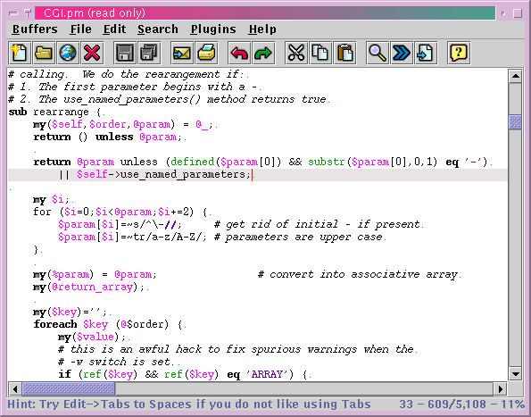

Syntax highlighting is the display of various syntax tokens using a different text style or color. This makes the source easier to follow, and makes syntax errors such as misplaced quotes easier to spot. All jEdit edit modes except for the plain text mode perform syntax highlighting.
The colors and styles used to highlight syntax tokens can be changed in the Colors & Styles pane of the Utilities>Global Options dialog box; see the section called The Global Options Dialog Box in Chapter 8.
Syntax highlighting can be enabled or disabled in one of the following three ways:
You can specify if syntax highlighting is to be performed on a global basis in the Editor pane of the Utilities>Global Options dialog box; see the section called The Global Options Dialog Box in Chapter 8.
You can specify if syntax highlighting is to be performed in the current buffer for the duration of the editing session in the Utilities>Buffer Options dialog box; see the section called The Buffer Options Dialog Box in Chapter 8.
You can specify if syntax highlighting is to be performed in the current buffer for future editing sessions with buffer-local properties by placing the following in one of the first 10 lines of the buffer, where flag is either "on" or "off":
:syntax=flag: |
Figure 5-1. Syntax highlighting in action
